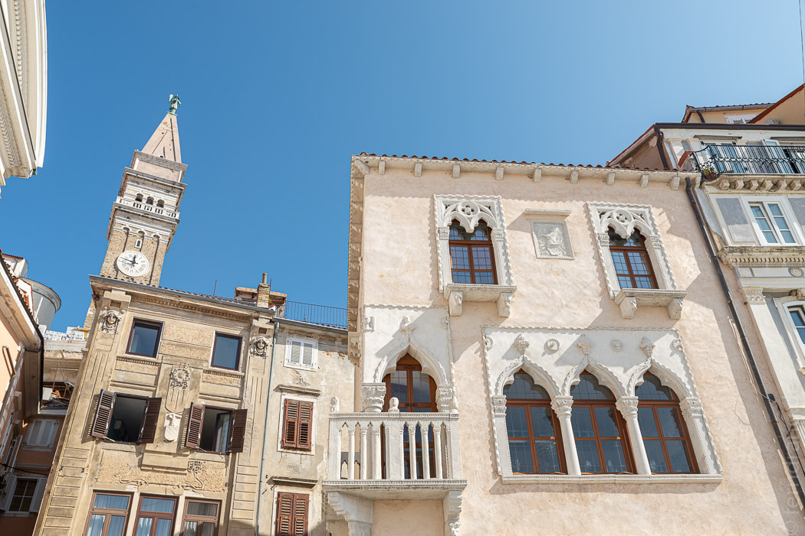
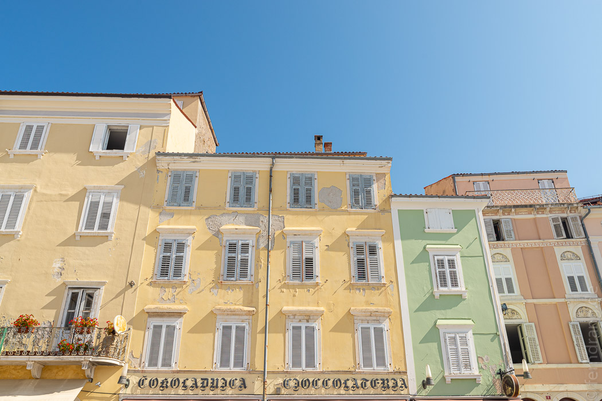
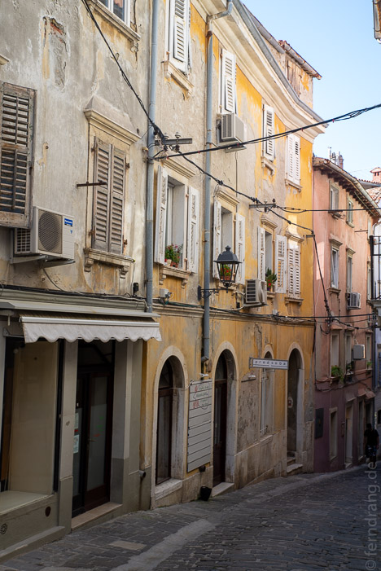
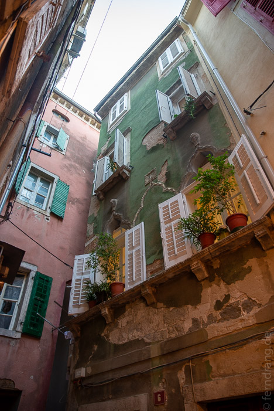
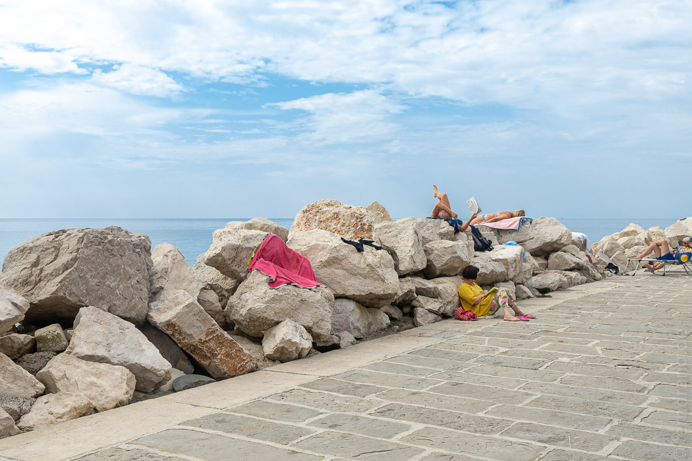
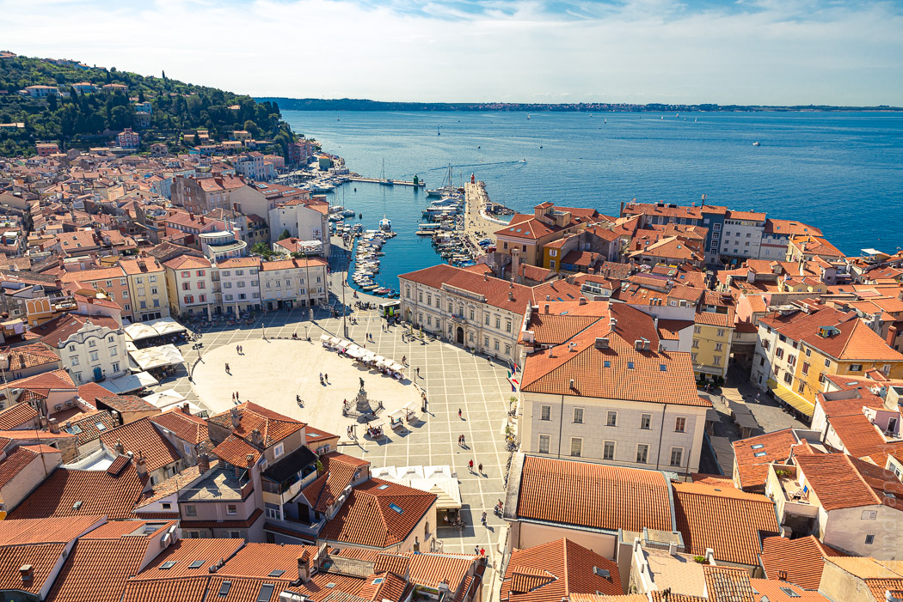
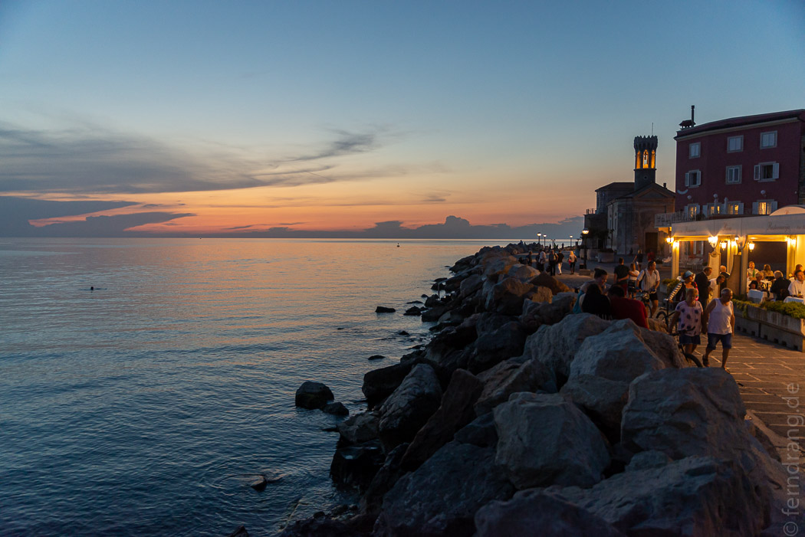
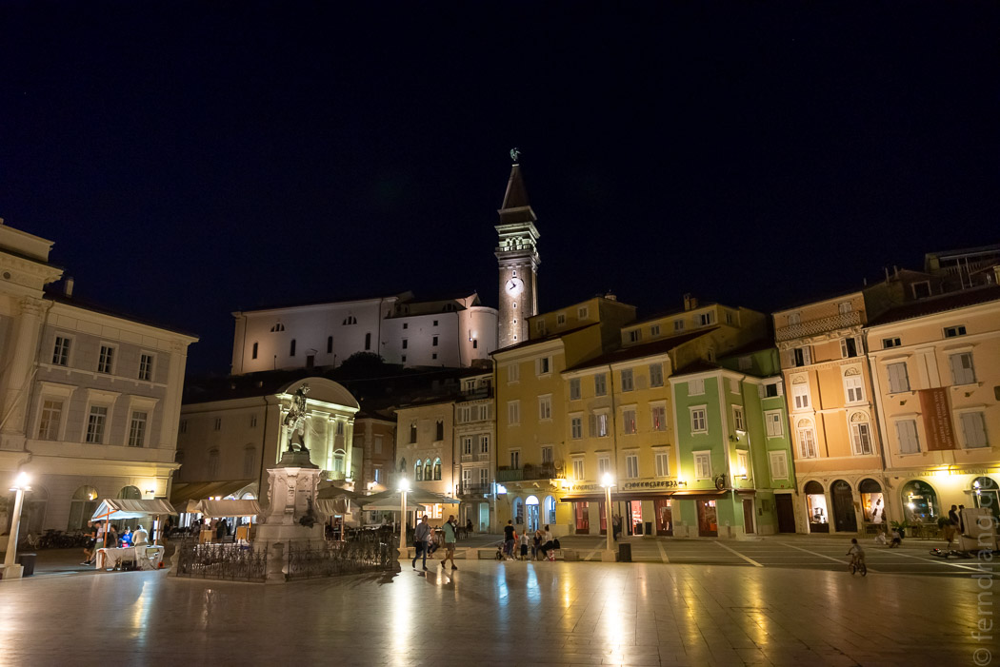

Slowenien hat auch ein kurzes Stück Küste, das ungefähr so lang ist wie ein Handtuch. Das alte Städtchen Piran liegt auf der Spitze einer Landzunge und könnte genauso gut in Italien liegen. Es gibt zwar keine Kanäle, aber es könnte auch ein winziges Venedig sein, das auf der anderen Seite der Adria gegenüber liegt. Das liegt an den herrlich verwitterten Häusern, und an dem Kirchturm, der der kleine Bruder vom Campanile sein könnte. (Der Markusdom hat hier aber keinen Bruder). Die Gassen sind so eng, dass man gerade zu Fuß aneinander vorbei kommt, daher haben wir unser Auto in einem Parkhaus vor der Stadt gelassen.    
Rund um die Spitze der Insel ist das Ufer mit dicken Steinen befestigt. Darauf oder einfach auf dem Bürgersteig liegen die Leute in der Sonne. Die einheimischen Fakire liegen in verrenkten Posen über mehrere Steine ausgestreckt ohne dabei unglücklich auszusehen. Wir haben das bis an die Grenze des Behandlungsbedarfs probiert. Das Geheimnis sind dicke Isomatten unterm Handtuch. Das Meer ist spiegelglatt und solange niemand einen Stein rein wirft, gibt es keine Wellen. Das Strassenniveau ist dementsprechend sichere 50cm über dem Wasser angelegt. Anscheinend hat der Mond hier auch keinen Einfluss mehr. Bei der Hitze wäre das Meer sehr erfrischend gewesen, aber am Ufer tummelte sich eine Kolonie kleiner Quallen, die den Badespass etwas trübten. 
Außer sich in den Gassen zu verlaufen oder einen Spaziergang auf die alte Stadtmauer zu machen kann man nicht viel mehr tun, als in der Sonne einen Spritz zu trinken oder sich einen Fisch braten zu lassen.   